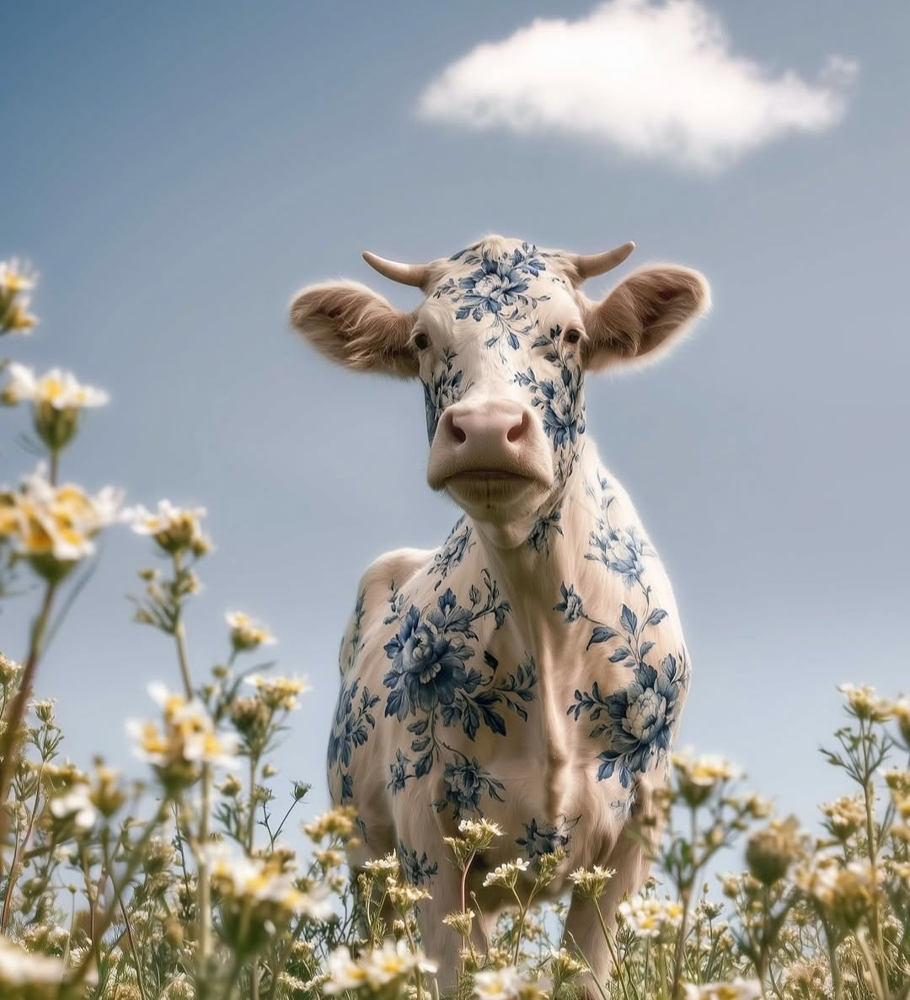
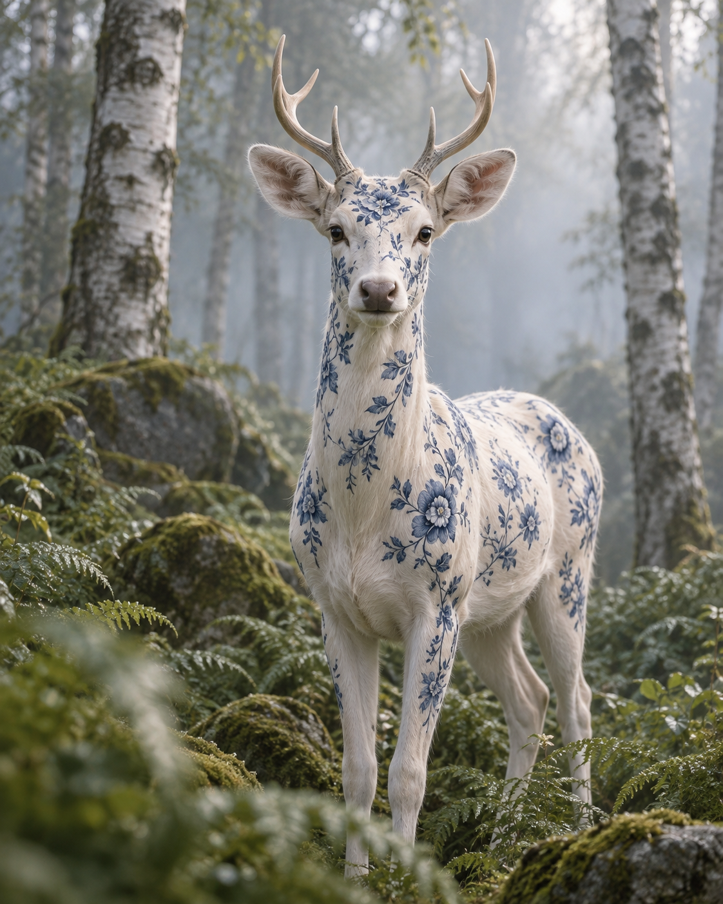

We help ambitious founders turn bold ideas into unforgettable identities with strategic thinking and creative precision.
We are a creative branding studio for ambitious startups, turning bold ideas into unforgettable identities with strategic thinking and creative precision.
We build bold, high-performance brands that move fast, adapt faster, and leave a lasting mark on their audience.
We build bold, high-performance brands that move fast, adapt faster, and leave a lasting mark on their audience.
● OUR APPROACH
Every memorable brand begins with a different point of view. We bring strategy, identity, digital experiences and art direction together to turn ambitious ideas into a world that feels unmistakably yours.
A1
Brand strategy¹ finds the idea at the heart of your business. A clear direction, a distinct voice and a reason for people to care.
A2
Visual identity² gives that idea a form. Expressive typography, unexpected details and a visual language that belongs to you.
A1 Strategy (01) B1 Digital (03)
A2 Identity (02) B2 Art direction (04)
B1
Digital experiences³ make the brand move. Intuitive, expressive and alive, every interaction becomes another part of the story.
B2
Art direction⁴ opens up a new world. Familiar things take an unexpected shape, creating images that stay with you long after the first look.

● WILD BY DESIGN MEADOW STUDY (01)
● OCTOPUS MENTALITY
We are an independent creative studio for people with bold ideas. Our work brings clear thinking and a curious eye together, moving between strategy, design and imagination. We look for the unexpected detail that makes a brand feel alive — a distinctive shape, a surprising image, a voice you recognize. From the first conversation to the final experience, we build identities with character, purpose and room to grow.

A:
It starts with a point of view.
1
Before we draw a mark or choose a color, we get to know the people behind the idea. What do they believe? What should their brand make someone feel? Those conversations give us a direction worth following. We turn that direction into a story, then explore the shapes, words and images that can carry it. The strongest identity grows from something real — a point of view that is clear enough to guide every decision and distinctive enough to be remembered.
B:
A world that holds together.
2
A brand lives in more than one place. It moves from a screen to a package, from a first impression to an everyday experience. We create systems that connect those moments without making them all look the same. Working closely with founders and teams, we make room for expression, growth and the unexpected. Each element has its own character, and every part belongs to the same world. That is how a good idea becomes a lasting presence.